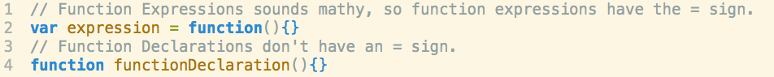
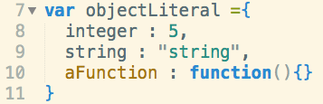
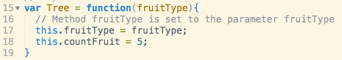
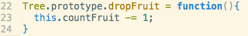
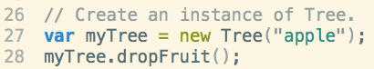

Object Oriented JavaScript
At this moment in time, I've finished 2/3rds of DevBootCamp, and am now about to embark on my last and final phase, Phase 3. As I headed into this weekend to prep, I was able to sit down and take an evaluation with Josh, a DBC teacher. This is what I've discovered about the basics of Object Oriented Javascript.
Two types of functions.
There are two types of functions in JavaScript, function expressions and function declarations Expressions sound mathy, so they are the ones with an = sign. Also known as anonymous functions, while declarations are nonanonymous functions. Expressions are more used than declarations because of hoisting.
Object Literals
Object Literals are just hashes in JavaScript. They are also a great way to namespace variables to take them out of the global scope.
Constructors
Constructors are a great way to store properties of an Object. They will be created every time I make an instance of Object. (Make sure to capitalize as I create an Object constructor!)
Prototypes
For functions of objects, store them in a prototype. Prototypes are only created once and referenced every time you create an instance of an Object. There are two ways to create prototypes: either line by line or by mixing the prototype with an object literal.
Instances of Object
Call an instance of an object as follows:
